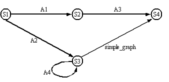
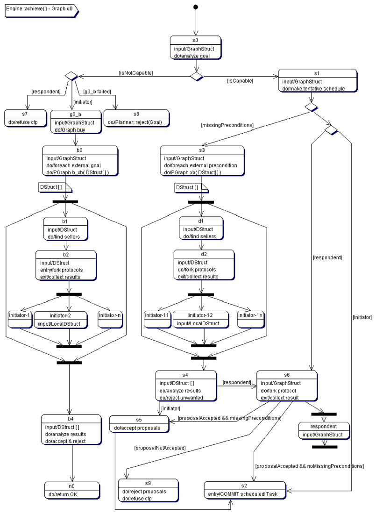
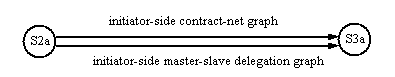
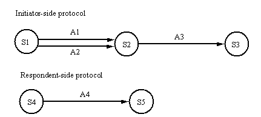

The Zeus Agent Building Toolkit |
Technical Manual |
| Contents | Introduction | Zeus Philosophy | Zeus Architecture | Communication | Coordination | Planning and Task Execution |
External Applications |
The component with the role of co-ordinating an agent's
activity with other agent’s is the Co-ordination Engine. It contains facilities
to manage the agent's problem solving behaviours, particularly those involving
multi-agent collaboration.
In addition to the general requirement for declarative specification of behaviour,
the design of the Co-ordination Engine was governed also by the requirement
that an agent should be capable of engaging in many tasks simultaneously. This
meant that the Engine should support some form of multi-tasking. However, because
of the costs involved, simple multi-threading was deemed inappropriate, since
the number of independent tasks could potentially run into hundreds. Thus we
choose to represent problem solving behaviours as recursive transition network
graphs, which are interpreted by a recursive finite state machine.
Figure 5.1 depicts a code fragment defining a simple graph and its equivalent pictorial representation. As the figure shows, behaviour graphs are specified as networks of nodes interconnected by directed arcs. The ZEUS representation of a graph is as a two-dimensional array of strings, where each string represents the fully qualified class name of the relevant node or arc.
The processing of a graph involves starting from a designated start node and attempting to traverse the graph until a terminal node is reached. The processing is controlled by a Graph class, which is the superclass of all behaviour graphs. The nodes of a graph implement the processing points, while its arcs implement tests to determine whether traversal from one node to another is valid. Each node and arc accept an input argument on which they act to return an output argument. Thus, information follows through a graph from node to arc, in tandem with the traversal path. To allow for recursion, graphs are themselves also arcs; for example, in Figure 5.1, the arc from S3 to S4 is a recursive invocation of simple_graph.
|
public class simple_graph extends Graph { static String[ ][ ] entry = { {"S1", "A1", "S2", "A2", "S3"}, {"S2", "A3", "S4"}, {"S3", "A4", "S3", "simple_graph", "S4"}, {"S4"} }; public simple_graph() { |
 |
Figure 5.1: (left) The Java code for the simple_graph data structure (right) the states of simple_graph.
All nodes of a graph must implement two functions: an exec() and a reset() function.
Arcs, on the other hand, must implement only a test() function that returns a Boolean value that indicates whether or not traversal of the arc is valid.
Multi-tasking
In order to allow for the parallel processing of multiple graphs, control of processing of graphs is managed by a priority FIFO node-queue. For example, processing of simple_graph of Figure 5.1 proceeds as follows: the graph is launched by creating its designated start node (S1) using Java’s dynamic (runtime) object creation mechanism. Next, the input of the node is set to the argument passed with the launch command. Now, the node is queued onto the node-queue to await execution. Once the node is selected for execution, its exec() method is called, and if it returns OK, then the first arc emanating from the node (A1) is dynamically created. The arc is initialised with the output of S1, and its test() method called. If the test() method succeeds, S2 is dynamically created, initialised with the output of A1, and queued onto the node-queue. The use of the node-queue therefore allows many graphs to be executed simultaneously by interleaving node processing.
Parallelism
Further parallelism is supported by a mechanism whereby certain arcs or graphs can be designated as parallel graphs. For such an arc or graph, whenever its input is an array, then a (non-parallel) copy of the arc/graph is created for each element of the array. The copies are managed in a k-out-of-n fashion, i.e. the parent arc/graph is traversed if k or more of its child copies succeed. The value of k is specified in the definition of the parallel graph. The parallel graph mechanism is particularly useful during delegation or contracting, where many independent jobs may need to be contracted simultaneously.
Backtracking
To continue with our example, assume that when S2 is processed by calling its exec() method, it returns OK, however, when its first arc (A3) is executed it fails. In such a case, the processor attempts to backtrack by trying the next arc from S2. Since, S2 has no more arcs, its reset() method is called to undo any changes made by its exec() method. Next, its predecessor node (S1) is called to attempt traversing the graph by following its next arc (i.e. A2). Backtracking is also initiated whenever a node’s exec() method fails.
Communication
In the graph framework, support for inter-agent communicating is achieved through use of the WAIT return value of a node’s exec() method. For example, a node engaged in communication would send out a message and then ask to be suspended by returning WAIT with an associated timeout value or message-reply-key. The node will then only be re-queued for processing when the timeout expires and/or a message with the required key is received.
The recursive transition network approach used to define behaviour satisfied our requirements for declarative specification of behaviour and support for multi-tasking. An alternative approach considered was rule-based processing; however this was rejected for a number of reasons. First, while rule-based systems allow declarative specifications and parallel processing, the management of contextual information (i.e. the data on which decisions and actions are based) becomes confusing when multiple independent behaviours act on the same data. Furthermore, this makes backtracking also difficult. A final consideration in its favour was that we also believe the transition network representation is more intuitive.
The generic ZEUS agent comes equipped with a predefined goal-processing
graph, this is depicted in Figure 5.2 and annotated in Table 5.1.
The graph controls basic problem solving behaviour for achieving goals in response to the
achieve() call made by the Co-ordination Engine component.
It can be viewed as being logically composed of three phases: a resource allocation phase, a negotiation phase
and a commitment management phase. Later in this section, the behaviour of this graph
will be explained with an example.

Figure 5.2: The achieve default goal processing graph
|
Node |
Description/Transition Condition |
Phase |
|
S1 |
Create and initialise data structure that holds goal contextual information; Invoke Planner | Resource allocation |
|
S2 |
Prepare to place external contracts |
Negotiation |
|
S3 |
Resume planning with results of negotiation | Resource allocation |
|
S4 |
Send confirmation and rejection messages to relevant contractor agents | Negotiation |
|
S5 |
Prepare to negotiate with agent that request goal | Negotiation |
|
S6 |
Check that confirmation message has been received from the agent that requested goal | Negotiation |
|
S7 |
Firmly commit to plan to achieve goal Set up monitors to manage plan execution |
Commitment |
|
S8 |
Failure: instruct planner to reject goal | Commitment |
|
S9 |
Rejection: send reject/refuse message | Commitment |
Table 5.1: The nodes of the Achieve() graph
The default problem solving behaviour can be consider further by walking
through the stages as they occur.
Consider that a message is received by an agent to achieve
a goal, x. Processing this message involves the agent’s Message Handler sending
a request to its Co-ordination Engine to launch the default goal processing
graph with the new message as its input argument. Launching the graph involves
the creation of an instance of its designated start node (S1 of Figure 5.2),
and the node’s input argument set to the new message.
When executed, S1 first creates a data structure to hold the contextual information that will be generated as a result of processing the goal. Next, the data structure is initialised with the goal’s parameters (taken from the content of the message passed as input to the node). Now, the node calls the Planner/Scheduler to plan a sequence of actions to achieve the goal. If the Planner has no competence whatsoever in dealing with the goal then the node fails, which in turn will cause the graph to fail.
Assume, however, that the Planner plans a sequence of actions to achieve the goal, but requires that some subgoals y and z should be achieved externally by other agents – this may be because of lack of time, competence, information or other resources. Now, A2 is the only viable arc from S1, since its test condition that external collaboration is required (a non-empty list of external subgoals) is satisfied. Thus we arrive at S2, where the agent prepares to contract out the subgoals y and z; this is achieved by executing A4.
A4 is in fact defined as a 0-out-of-n parallel graph. Thus, if its input is an array, then a (non-parallel) child copy of itself is created for each element of the array. Therefore, with the sub-goals y and z as its inputs, independent child copies of A4 are created to handle each of y and z. Secondly, by being defined as 0-out-of-n, the parent A4 is traversed if zero or more of its child copies succeed. Thus, on contracting out y and z, the parent A4 will be traversed if none, one or both goals are contracted out.

Figure 5.3: The A4 parallel graph.
The graph defined by A4 (an example is shown in Figure 5.3) simply serves to provide a placeholder for the potentially many arcs/graphs that define the initiator-side behaviour of various negotiation protocols. It could include, for example, arcs/graphs defining the contract manager’s behaviour at the request for proposals stage of the contract-net protocol, or the contract manager’s initial delegation behaviour in the master-slave delegation protocol.
As the graph processor attempts to traverse the first viable arc from S2a to S3a, the choice of negotiation protocol depends on two factors. Firstly, the order in which the arcs from S2a to S3a are listed in the A4 graph specification, and secondly on whether the selected arc is indeed traversable in the given context. The backtracking capability of the graph processor ensures that if viable arcs exist from S2a to S3a, then at least one will be selected. In ZEUS, negotiation graphs (e.g. the initiator-side negotiation graphs in Figure 5.3) typically comprise two main parts: an applicability assessment section and a negotiation dialogue section. The applicability section simply checks whether the protocol is applicable in the given context, while the dialogue section actually implements the protocol.
Once A4 is traversed, at S3 the Planner is re-called with the results of the contracting process. Depending on its input, the Planner returns one of three possible results:
(a) that the planning process failed and no solution could be found for the original problem,
(b) that the planning process completed successfully and no further contracting is required, or
(c) it might return a new list of subgoals to be contracted out, as well as a partitioned list of prior sub-contracts, some of which should be rejected and others that should be accepted.
If further contracting is required, A5 will return the goal processor to S2 to begin a new phase of contracting. If, alternatively there are no more subgoals to contract out and the planning process completed successfully, then A6 or A7 will be selected. Which one gets chosen depends on whether or not the agent is trying to achieve the original goal x for itself or on behalf of another agent. In the latter case, A6 is selected, which leads to S5.
At S5, some housekeeping functions are performed, in preparation for negotiation with the agent that requested that goal x be achieved. The actual respondent-side negotiation is performed when A8 is executed. A8 is in fact a placeholder for potentially many arcs/graphs that define different respondent-side negotiation behaviour. Again the ordering of the arcs/graphs (that replace A8) and the context determine which negotiation protocol gets selected.
Following respondent-side negotiation (A8), at S6 checks are performed to determine that the agent has been awarded the contract, i.e. that an award confirmation message is received from the agent that requested goal x. Next, A9 or A11 is traversed, depending on whether or not the goal x had any external subgoals. Since in our example sub-goals y and z were contracted out, A9 is selected, leading to S4. At S4, award confirmation messages are sent out to the agents selected to perform the contracted subgoals, and rejection messages sent out to those agents that did not get selected. Finally, at S7, the plan constructed to achieve the goal x is scheduled for execution, and monitors are set up to manage the plan execution process.
From the foregoing description, a couple of points should be clear. First, that the transition network representation makes it relatively easy for one to redefine, if needed, the basic goal processing behaviour outlined above. However, we believe our conceptual decomposition of the goal processing process into resource allocation (planning), negotiation and commitment phases, and our default graph are fairly generic and applicable in a number of domains.
Secondly, the transition network approach makes it easy for negotiation protocols and strategies to be added to a ZEUS agent. Simply, initiator- and respondent-side negotiation graphs have to be defined for the protocol/strategy, and integrated into the default graph between S2a and S3a of Figure 5.3, and S5 and S6 of Figure 5.2, respectively. In fact, the generic ZEUS agent already has some predefined negotiation protocols such as contract-net, master-slave delegation and some auction protocols. Figure 5.4 and Table 5.2 describe our current initiator- and respondent-side implementations of the contract-net protocol. In typical negotiation graphs, the negotiation strategy logic is defined within the exec() methods of the nodes in the graphs. In some cases, this may even involve a call to external programs. The organisational relationships defined by Agent Component Library are typically used in the applicability test portions of negotiation protocol graph specifications. For example, the applicability test portion of the initiator-side contract-net graph of Figure 5.4 mandates a preference for co-worker agents before peer agents when contracting out tasks (by the ordering of the arcs A1 and A2, where A1 precedes A2).

Figure 5.4: Sample ZEUS implementation of the contract-net protocol
| Initiator-side contract-net behaviour | |
| Node/Arc | Description/Transition Condition |
|
S1 |
Identify agents that can perform goal |
|
A1 |
Select subset of agents that can perform goal and who are co-workers (check not empty) |
|
A2 |
Select subset of agents that can perform goal and who are peers (check not empty) |
|
S2 |
Send request for proposals to selected agent and await responses |
|
A3 |
Check that an accept response has been received |
|
S3 |
Done |
| Respondent-side contract-net behaviour | |
|
Node/Arc |
Description/Transition Condition |
|
S4 |
Evaluate cost Send accept message Await response |
|
A4 |
Contract award message received |
|
S5 |
Done |
Table 5.2: Descriptions of the nodes and arcs of Figure 5.4.
It is worth briefly commenting on the rationality model implicit in the Co-ordination Engine and the default goal-processing graph. Used as is, the default goal processing graph implicitly implements the following:
(a) an agent would accept any goal for which it has the available resources to pursue,
(b) the agent will continue accepting goals on a first-come first-served basis until its capacity to do so is exhausted, and
(c) once an agent has accepted a goal, the agent is fully committed to the goal, and will do all in its power to ensure the goal is achieved. (As we shall see when discussing exception handling, the agent remains committed to an accepted goal even when it might no longer be in its best interest to remain so[2]).
It is worth noting that the current version of the Co-ordination Engine has no explicit rationality model, i.e. there is no reasoning framework to determine from whom, and when to accept goals, or equivalently, when to abandon goals although they may be technically achievable. Such a model, if needed, can be implemented by adding an agenda (and associated reasoning rules) to control (i) the conditions under which the goal processing graph is launched for goal selection, and (ii) the node-queue of the Co-ordination Engine for goal scheduling and abandonment control. The reasoning rules of the agenda should be essentially equivalent to the desire filter of the belief-desire-intention agent architecture [7]. Given the application domains envisaged for ZEUS, such an explicit rationality model was not deemed particularly necessary, although one is likely to be included in future versions of the system.
[2] This reflects practice in commercial domains, where for legal reasons and also in order to maintain customer confidence, contracts that are later found to be non-profitable are not automatically abandoned.
| Contents | Introduction | Zeus Philosophy | Zeus Architecture | Communication | Coordination | Planning and Task Execution |
External Applications |